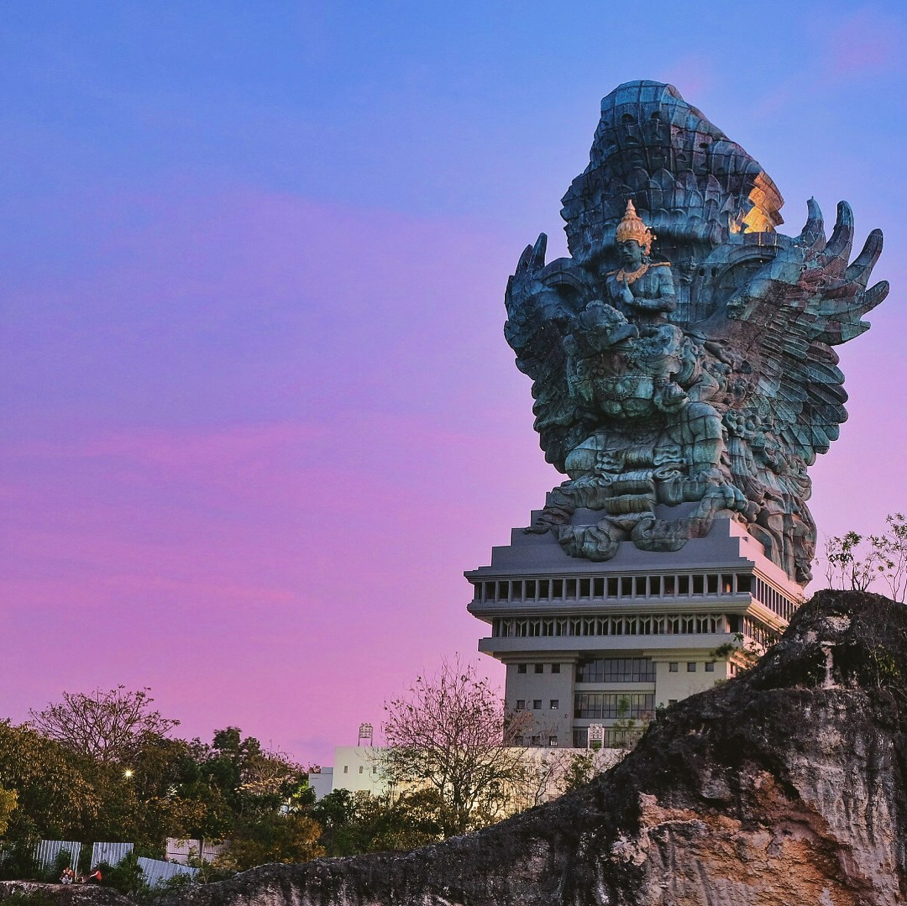
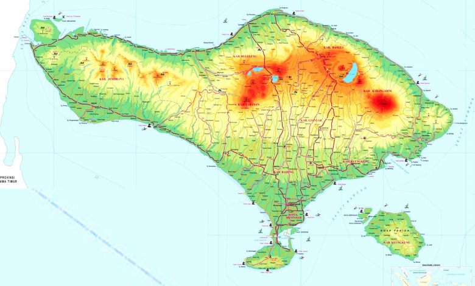
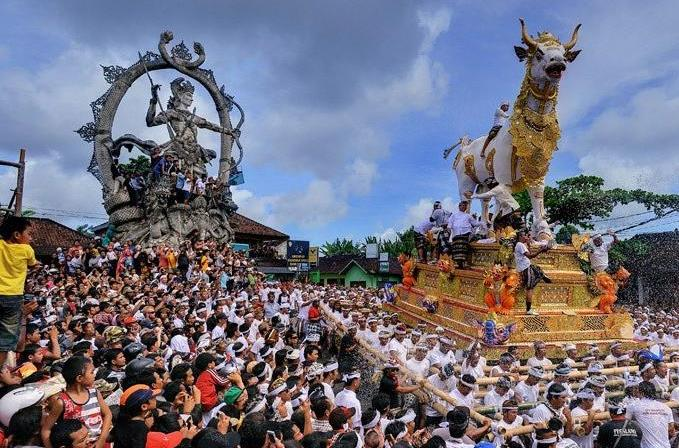
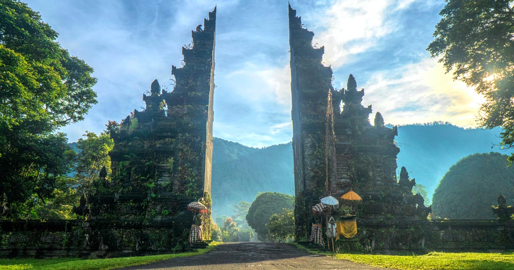

Sejarah

Jepang menduduki Bali selama Perang Dunia II dan saat itu seorang perwira militer bernama I Gusti Ngurah Rai membentuk pasukan Bali 'pejuang kemerdekaan'. Menyusul menyerahnya Jepang di Pasifik pada bulan Agustus 1945, Belanda segera kembali ke Indonesia (termasuk Bali) untuk menegakkan kembali pemerintahan kolonialnya layaknya keadaan sebelum perang. Hal ini ditentang oleh pasukan perlawanan Bali yang saat itu menggunakan senjata Jepang.
Pada 20 November 1946, pecahlah pertempuran Puputan Margarana yang terjadi di Uma Kaang, Desa Marga, Kabupaten Tabanan, Bali. Kolonel I Gusti Ngurah Rai yang berusia 29 tahun, memimpin tentaranya dari wilayah timur Bali untuk melakukan serangan sampai mati pada pasukan Belanda yang bersenjata lengkap. Seluruh anggota batalion Bali tersebut tewas dan menjadikannya sebagai perlawanan militer Bali yang terakhir.
Pada tahun 1946, Belanda menjadikan Bali sebagai salah satu dari 13 wilayah bagian dari Negara Indonesia Timur yang baru diproklamasikan, yaitu sebagai salah satu negara saingan bagi Republik Indonesia yang diproklamasikan dan dikepalai oleh Sukarno dan Hatta. Bali kemudian juga dimasukkan ke dalam Republik Indonesia Serikat ketika Belanda mengakui kemerdekaan Indonesia pada 29 Desember 1949. Tahun 1950, secara resmi Bali meninggalkan perserikatannya dengan Belanda dan secara hukum menjadi sebuah provinsi dari Republik Indonesia.
Letusan Gunung Agung yang terjadi pada tahun 1963, sempat mengguncangkan perekonomian rakyat dan menyebabkan banyak penduduk Bali bertransmigrasi ke berbagai wilayah lain di Indonesia.
Tahun 1965, seiring dengan gagalnya kudeta oleh G30S terhadap pemerintah nasional di Jakarta, Bali dan banyak daerah lainnya, terjadilah penumpasan terhadap anggota dan simpatisan Partai Komunis Indonesia. Di Bali, diperkirakan lebih dari 100.000 orang terbunuh atau hilang. Meskipun demikian, kejadian-kejadian pada masa awal Orde Baru tersebut sampai dengan saat ini belum berhasil diungkapkan secara hukum.
Serangan teroris telah terjadi pada 12 Oktober 2002, berupa serangan Bom Bali I di kawasan pariwisata Kuta tepatnya Legian, menyebabkan sebanyak 202 orang tewas dan 209 orang lainnya cedera. Serangan Bom Bali II tahun 2005 juga terjadi tiga tahun kemudian di Kuta dan pantai Jimbaran. Kejadian-kejadian tersebut mendapat liputan internasional yang luas karena sebagian besar korbannya adalah wisatawan asing dan menyebabkan industri pariwisata Bali menghadapi tantangan berat beberapa tahun terakhir ini.
Geografis

Pulau Bali adalah bagian dari Kepulauan Sunda Kecil sepanjang 153 km dan selebar 112 km sekitar 3,2 km dari Pulau Jawa. Secara geografis, Bali terletak di 8°25′23″ Lintang Selatan dan 115°14′55″ Bujur Timur yang membuatnya beriklim tropis seperti bagian Indonesia yang lain.
Gunung Agung adalah titik tertinggi di Bali setinggi 3.148 m. Gunung berapi ini terakhir meletus pada Maret 1963. Gunung Batur juga salah satu gunung yang ada di Bali. Sekitar 30.000 tahun yang lalu, Gunung Batur meletus dan menghasilkan bencana yang dahsyat di bumi. Berbeda dengan di bagian utara, bagian selatan Bali adalah dataran rendah yang dialiri sungai-sungai.
Berdasarkan relief dan topografi, di tengah-tengah Pulau Bali terbentang pegunungan yang memanjang dari barat ke timur dan di antara pegunungan tersebut terdapat gugusan gunung berapi yaitu Gunung Batur dan Gunung Agung serta gunung yang tidak berapi, yaitu Gunung Merbuk, Gunung Patas dan Gunung Seraya. Adanya pegunungan tersebut menyebabkan Daerah Bali secara Geografis terbagi menjadi 2 (dua) bagian yang tidak sama yaitu Bali Utara dengan dataran rendah yang sempit dan kurang landai dan Bali Selatan dengan dataran rendah yang luas dan landai.
Kemiringan lahan Pulau Bali terdiri dari lahan datar (0-2%) seluas 122.652 ha, lahan bergelombang (2-15%) seluas 118.339 ha, lahan curam (15-40%) seluas 190.486 ha dan lahan sangat curam (>40%) seluas 132.189 ha. Provinsi Bali memiliki 4 (empat) buah danau yang berlokasi di daerah pegunungan, yaitu Danau Beratan atau Bedugul, Buyan, Tamblingan, dan Batur. Alam Bali yang indah menjadikan pulau Bali terkenal sebagai daerah wisata.
Ibu kota Bali adalah Denpasar. Tempat-tempat penting lainnya adalah Ubud sebagai pusat kesenian dan peristirahatan, terletak di Kabupaten Gianyar. Nusa Lembongan adalah sebagai salah satu tempat menyelam (diving), terletak di Kabupaten Klungkung. Sedangkan Kuta, Seminyak, Jimbaran dan Nusa Dua adalah beberapa tempat yang menjadi tujuan utama pariwisata, baik wisata pantai maupun tempat peristirahatan, spa, dan lain-lain, terletak di Kabupaten Badung.
Luas wilayah Provinsi Bali adalah 5.636,66 km2 atau 0,29% luas wilayah Negara Kesatuan Republik Indonesia. Secara administratif Provinsi Bali terbagi atas 8 kabupaten, 1 kotamadya, 55 kecamatan, dan 701 desa/kelurahan.
Kebudayaan

Budaya Bali adalah suatu cara hidup yang berkembang dan dimiliki oleh masyarakat Bali dan diwariskan dari generasi ke generasi. Kebudayaan Bali pada hakikatnya dilandasi oleh nilai-nilai yang bersumber pada ajaran agama Hindu.
1.Rumah Adat
Saat berada di Bali, detikers pasti akan melihat banyak bangunan yang khas. Rumah adat ini bisa dilihat, baik di desa maupun kota. Bahkan ada desa yang sekampung memiliki bentuk rumah yang sama.
Rumah adat Bali menggunakan filosofi Tri Hita Karana yang artinya harmoni antara manusia dengan manusia, harmoni dengan alam, harmoni dengan Tuhannya. Orang Bali pun sangat memperhatikan setiap bagian rumah, mulai dari atap yang biasanya berbentuk limasan atau segitiga, bahan baku, struktur, hingga ornamen-ornamen rumah yang khas Bali.
2.Tradisi Lisan
Tradisi lisan ini di antaranya terkait sejarah lisan, dongeng, cerita rakyat. Di Bali, ada beberapa cerita terkenal, antara lain kisah Ni Calon Arang. Kisah ini sebetulnya berasal dari Kediri yang bercerita tentang Ni Calon Arang yang memiliki putri cantik bernama Diah Ratna Mengali.
Calon Arang ini memiliki ilmu hitam dan bisa menjadi leak. Hal ini membuat orang takut melamar anaknya. Calon Arang marah dan menebar penyakit di seluruh tempat.
Cerita lainnya mengenai Kebo Iwa atau yang berarti paman kerbau.dia dinamai demikian karena nafsu makannya yang luar biasa sejak bayi. Suatu ketika, warga tidak bisa menyediakan makanan hingga membuat Kebo Iwa marah dan mengancam akan menghancurkan seisi desa.
Warga pun berjanji akan memberikan banyak makanan namun Kebo Iwa harus menggali tanah. Warga terus memberikannya makanan dan Kebo Iwa juga terus menggali tanah hingga sangat luas dan akhirnya memancarkan air. Air itu kemudian memenuhi tanah galian dan menenggelamkan Kebo Iwa. Kisah itulah yang konon menjadi awal mula terbentuknya Danau Batur.
3.Pakaian Adat
Bali juga memiliki pakaian adat yang khas, dilansir Wolipop dari buku 'Tata Rias Pengantin Bali' (Gramedia Pustaka Utama, 2020) yang ditulis oleh Dr. Dra. A.A. Ayu Ketut Agung, M.M. dan Ade Aprilia, ada tiga tingkatan pakaian adat Bali beserta tata riasnya untuk pengantin.
Pertama ialah Payas Nista, yakni pakaian adat Bali yang dianggap sederhana, biasanya dipakai kasta terendah (sudra atau jaba). Kedua, Payas Madya, yakni untuk tingkat menengah dengan model lebih mewah. Ketiga, Payas Agung, tampilannya paling mewah dan lengkap. Payas Madya dan Payas Agung bisa digunakan oleh golongan Triwangsa (Brahmana, Ksatrya dan Wesia).
4.Alat Musik Tradisional
Alat musik dari Bali di antaranya ialah seperangkat gamelan yang terdiri dari berbagai alat musik. Jenis gamelan ini pun beragam, misalnya gamelan gong kebyar, gamelan palegongan, angklung, gambang, selonding, ada pula gamelan yang terbuat dari bambu seperti rindik, jegog, dan suling. Selain itu, ada juga gangsa, gender, reong, terompong, gong, kendang dan ceng-ceng.
5.Ritus
Ritus atau upacara adat di Bali ini juga menjadi menjadi daya tarik wisata karena bisa disaksikan masyarakat umum. Dikutip dari detikTravel, satu yang paling terkenal ialah upacara ngaben atau upacara pembakaran jenazah. Kemudian ada melasti atau upacara penyucian diri dengan mendatangi sumber air yang biasanya dilakukan sebelum Nyepi.
Upacara lainnya ialah Galungan yang dilakukan untuk memperingati terciptanya alam semesta dengan cara di rumah bersembahyang di rumah atau ke Pura sekitar. Kemudian ada upacara Kuningan biasanya berdekatan dengan hari raya Galungan. Tradisi dalam Kuningan ialah menyiapkan persembahan berwarna kuning.
6.Adat Istiadat
Sejumlah desa di Bali masih memegang teguh adat istiadat dengan kuat. Aturan-aturan adat ini disebut dengan awig-awig. Salah satu aturan yang dipegang ialah larangan mempunyai istri lebih dari satu. Jika dilanggar, maka orang tersebut akan dikucilkan pada sebuah tempat.
7.Kesenian
Ada banyak jenis kesenian di Bali, mulai dari seni tari dan seni musik yang sering ditampilkan di berbagai objek wisata. Kemudian ada seni lukis hingga seni pahat. Ada banyak museum di Bali yang khusus menampilkan
Dilihat dari seni tari saja, ada berbagai jenis tarian yang memiliki keindahan gerak maupun filosofi. Misalnya tari kecak yang sering dipentaskan oleh sekelompok penari, kemudian tari pendet, tari baris, tari barong, tari legong, hingga tari topeng.
8.Permainan Tradisional
Permainan tradisional ini masih sering dimainkan anak-anak Bali. Dikutip dari penelitian Institut Seni Indonesia (ISI) Denpasar, permainan tradisional Bali tersebut antara lain Tok Lait Kancing, Kul Kuk, Penyu Mataluh, Meong-Meongan Kotak, dan Deduplak.
9.Manuskrip
Bali memiliki manuskrip yang telah diakui sebagai warisan budaya dunia, yakni manuskrip lontar. Dilansir dari Jurnal Manuskrip Nusantara di perpusnas.go.id, lontar menyimpan kekayaan pemikiran dan rohani masyarakat Bali secara tradisi. Lontar dianggap memberikan cermin kehidupan yang dapat dijadikan smerti atau contoh dan implementasi kehidupan yang patut dan tidak patut dilakukan.
10.Bahasa
Bahasa Bali merupakan satu kekayaan bahasa yang ada di Indonesia. Bahasa Bali memiliki beberapa tingkatan dari yang kasar hingga sangat halus. Hal ini sangat penting di Bali karena pengucapan bahasa ini harus disesuaikan dengan siapa kita berbicara.
11.Olahraga Tradisional
Olahraga tradisional ini seperti tajog atau egrang dan bolak-balik balok. Ada juga olahraga yang berasal dari permainan tradisional deduplak. Olahraga ini sering dilombakan dalam acara tertentu di Bali.
Wisata

Berikut rekomendasi tempat wisata Bali yang bisa dikunjungi karena pemandangannya yang luar biasa cantik serta menyimpan segudang cerita menarik:
1.Diamond Beach Nusa Penida
Diamond Beach adalah pantai tersembunyi yang menakjubkan yang terletak di bagian bawah tebing terjal di ujung timur Pulau Nusa Penida.
2.Tirta Gangga
Terkenal dengan istana airnya, Tirta Gangga memiliki taman air yang mewah dan sering sekali dijadikan tempat berfoto oleh para pelancong karena keindahannya.
3.Wanagiri Hidden Hills
Wanagiri Hidden Hills merupakan tempat wisata Bali yang terletak di bagian utara.
Tempat ini memiliki banyak objek foto unik yang terbuat dari bambu.
Lokasi yang paling populer dan instagramable adalah sarang burung raksasa, serta ayunan, dan pusaran api yang menghadap ke danau.
4.Pasut Beach
Keunikan dari pantai yang berpasir hitam ini adalah pohon kelapa di bibir pantai tersebut memiliki batang yang miring sehingga sering menjadi objek foto wisatawan yang datang.
5.Bukit Batu Kursi Pemuteran
Bukit dengan tinggi 700 meter tersebut dapat didaki dengan menaiki anak tangga yang ada pada sepanjang trek utama.
Hanya butuh waktu setengah jam, Moms dan keluarga bisa menikmati matahari terbit dan terbenam dari puncak.
Pastikan Moms tidak melewati setiap sisi dari sepanjang perjalanan tersebut yang sangat indah dan cantik.
6.Tanah Lot
Tanah Lot jika diterjemahkan ke bahasa Indonesia artinya daratan di tengah laut.
Batu karang besar ini berada di tengah laut dan saat air pasang, batu karang terlihat terpisah dengan daratan.
Daya tarik utama dari Tanah Lot temple terdapat pada keindahan pemandangan matahari terbenam, dengan siluet pura Tanah Lot, dijamin sangat luar biasa!
Berpadu dengan ombak laut selatan yang menerjang batu karang, pemandangan ini akan membekas dalam ingatan
7.Uluwatu Temple
Hal menarik yang wisatawan dapat lihat di wisata Bali yang satu ini antara lain:
-Pura yang berada di ujung atas tebing tinggi, dengan ketinggian tebing sekitar 70 meter.
-Keunikan arsitektur pura.
-Terdapat banyak kera ekor panjang di sekitar area pura.
-Dari atas tebing wisatawan dapat melihat pemandangan samudra Hindia.
-Menjelang sunset, wisatawan dapat menyaksikan pemandangan matahari terbenam di Samudra Hindia dari atas tebing tanpa halangan.
-Lokasi menonton tari Kecak Api yang paling terkenal di pulau Bali.
8.Pura Ulun Danu Beratan Bedugul
Lokasi Pura Ulun Danu berada di tepi danau Beratan yang masuk dalam kawasan wisata Bedugul.
Lokasi danau Beratan Bedugul berada di ketinggian 1200 meter dari permukaan air laut. Karena itu, udara di sekitar area pura Ulun Danu Beratan sangat sejuk.
Hal menarik yang membuat pura Ulun Danu Beratan populer menjadi destinasi wisata Bali adalah:
-Pemandangan unik pura Ulun Danu yang terlihat terapung di tengah danau Beratan, sehingga terlihat unik di foto.
-Udara sejuk daerah pegunungan.
-Tata kebun sekitar area pura.
-Lokasi pura Ulun Danu Beratan berdekatan dengan lokasi Kebun Raya Bali.
9. Pemandangan Danau & Gunung Batur Kintamani
Ketinggian area Kintamani berada sekitar 1,500 meter dari permukaan air laut, sehingga udara di daerah Kintamani sangat sejuk.
Daya tarik utama wisatawan liburan ke Kintamani adalah melihat pemandangan danau dan Gunung Batur.
Ada banyak lokasi untuk melihat pemandangan ini. Salah satu yang menjadi favorit adalah di desa Penelokan.
Sebagian besar wisatawan saat melihat pemandangan gunung dan danau Batur di desa Penelokan, sambil menikmati makan siang prasmanan di restoran Grand Puncak Sari Kintamani.
10. Air Terjun Aling-Aling
Air terjun ini memiliki ketinggian sekitar 35 m yang terbilang unik karena dari puncaknya air jatuh ini terpecah menjadi 2 terjunan yang bentuknya berdampingan.
Air terjun yang sebelah kanan memiliki debit air yang lebih besar dibandingkan di sebelah kirinya.
Lokasi air terjun aling-aling berada di Jalan Raya Desa Sambangan, Sukasada Kabupaten Buleleng, Bali.
Ada tebing yang tinggi dan pepohonan yang membuat suasana makin dingin dan asri. Moms juga akan menemukan kolam yang bisa digunakan untuk berendam serta berenang.